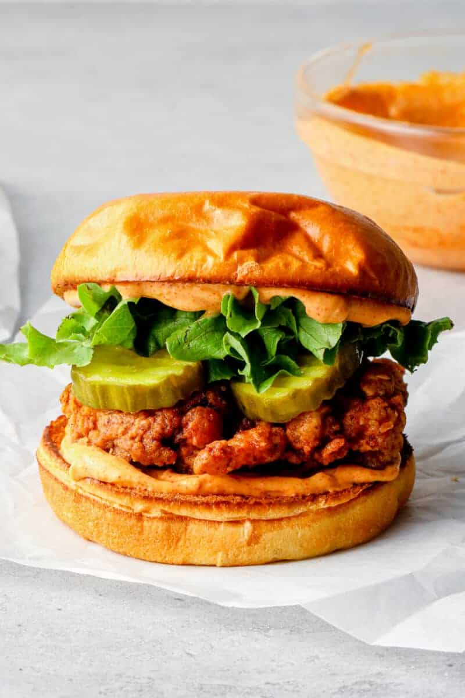

Chicken Burger

Description
This time we will be looking at a classic
of western cuisine. The chicken burger. The
recipe will be focused specifically on making
a fried chicken burger
Ingredients
- chicken breast fillet
- 1/2 cup of all purpose flour
- 1 large egg
- 1/2 cup of kentucky chicken mix
- 1 burger bun
- 1 leaf of lettuce/li>
- 2 sliced pieces of tomato
- 1 sliced piece of onion
- 1 cup of oil for deep frying or semi-deep frying
- other sauces and extras (optional)
Steps
- Cut 1 breast fillet in half so you have 2 shorter pieces and throw them in the flour
- Pour oil into a frying pan and turn stove to medium high heat
- Scramble the egg and throw the flour covered chicken pieces into the scrambled egg
- Now throw the egg and flour covered chicken pieces into the kentucky chicken mix
- When the oil is bubbling, slowly drop the chicken pieces into the oil
- Cook for 6-10mins. Ensure there is no pink in the centre of the chicken. Make cuts into the chicken if necessary
- Now butter burger buns and heat on another pan at medium high for 30 seconds
- Add your chicken pieces on a base burger bun followed by tomato, onion, lettuce and the top bun
- Enjoy!